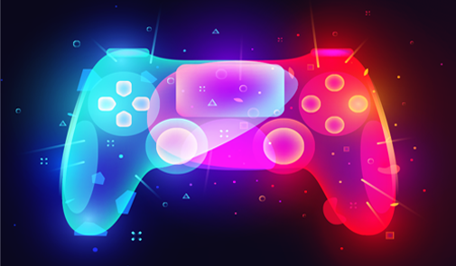
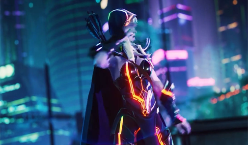

Salah satu yang membuat esports Indonesia semakin berkembang adalah komunitas esports-nya yang terus bertumbuh. Bahkan bisa dikatakan bahwa komunitas adalah salah satu element terpenting di dalam ekosistem esports.
Komunitas tak hanya penting untuk kalangan gamers saja, namun pihak developer juga membutuhkan komunitas yang aktif karena suatu game bisa bertahan dengan adanya komunitas. Sebagus apapun suatu game, jika tidak memiliki komunitas ada pasti akan sulit bertahan.
Komunitas menjadi media bagi para developer game untuk menyentuh para player-nya, terutama untuk player berbakat. Tak jarang developer game dari luar negeri melangsungkan babak kualifikasi regional melalui perpanjangan tangan komunitas.
Dari sisi pemainnya sendiri, esports gamers menjadikan komunitas sebagai tempat untuk belajar dan mengasah skill, serta mencari koneksi pertemanan. Pada dasarnya komunitas adalah sebuah wadah berkumpulnya beberapa orang yang memiliki interest atau ketertarikan yang sama. Perbedaan komunitas esports gaming dengan komunitas lainnya pun hanya terletak pada interest serta sudut pandangnya itu sendiri.
Komunitas gaming sama dengan komunitas lainnya, yaitu sebagai tempat pertukaran informasi dan berkomunikasi. Itulah yang menyebabkan sobat gamers harus bergabung dengan komunitas. Karena setiap orang yang bermain game, baik itu game casual maupun kompetitif pasti membutuhkan informasi. Mulai dari informasi update game, tips and trick, sharing info, hingga turnamen. Sebagai tambahan, komunitas pada umumnya memiliki ikatan yang solid. Banyak yang memanfaatkan wadah ini untuk mendapatkan rekan satu tim yang sesuai.
Kalian player baru dan ingin berkembang? Kalian harus join komunitas karena mungkin saja kalian akan bertemu orang-orang atau tim yang memiliki tujuan sama di komunitas.
Sumber : Indoesports.com

Manfaat Video Game
Bermain game sering didakwa memberik dampak negatif untuk kesehatan fisik dan psikis pemainnya. Bermain game dianggap sebagai kegiatan unfaedah atau tidak bermanfaat dan hanya membuang waktu. Tapi, apa benar demikian?
Baca Selengkapnya

Perkembangan Game Online
Bermain game dulu kerap dipandang sebelah mata dan dianggap hanya membuang waktu saja. Namun itu dulu, kalau sekarang?
Baca Selengkapnya